Introduction to X-ray attenuation and its
implementation in gVXR
Workshop, dXCT 2026
Prof Franck P. Vidal
Scientific Computing, Science and Technology Facilities Council
2026-06-16
Real vs simulated?
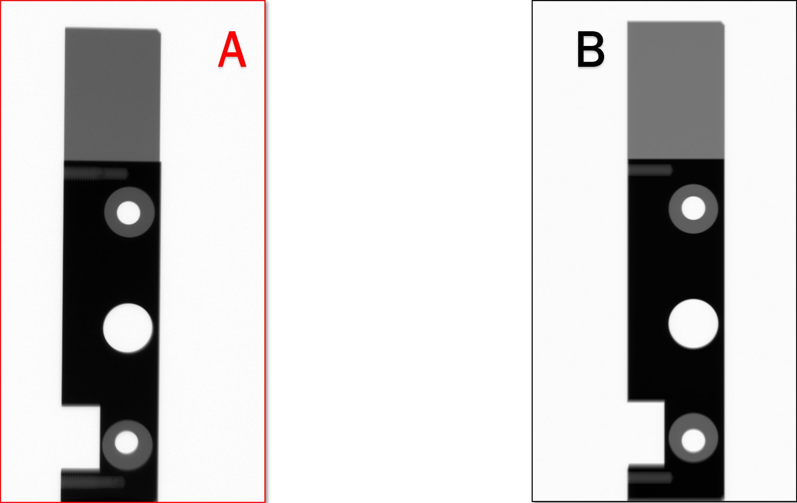
Real vs simulated?
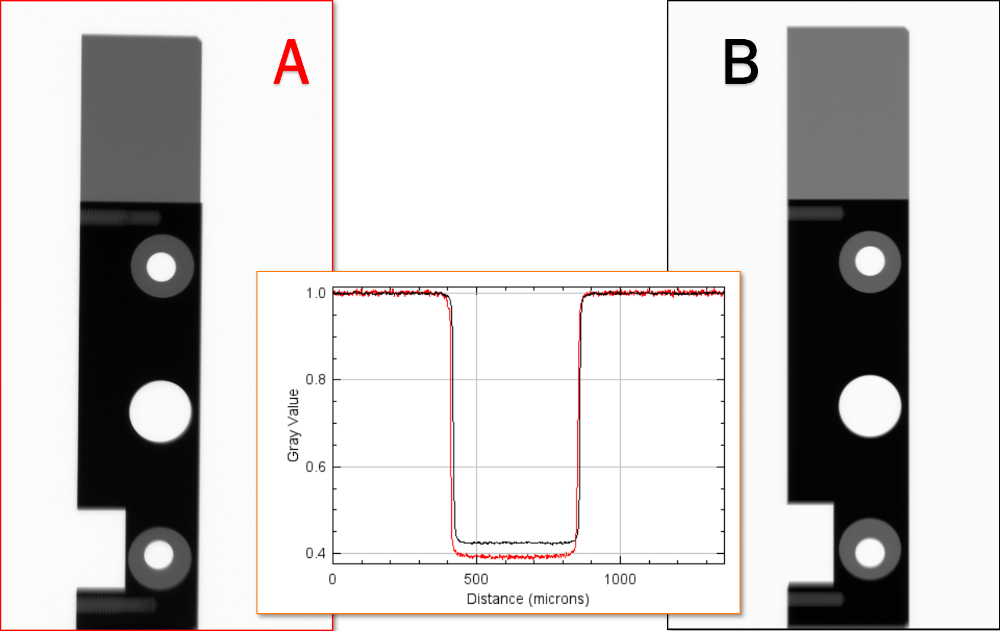
Aims of this session
- Discover what gVXR is;
- Become familiar with the Beer-Lambert law to compute the attenuation
of X-rays by matter;
- Describe how the Beer-Lambert law is implemented in
gVirtualXray;
- Learn how to generate realistic, XCT projection data using the gVXR
package,
- with a focus on building simulation setups that mirror practical XCT
scenarios and
- producing synthetic datasets suitable for downstream analysis and
model training.
Contents
- What is gVXR and what do people do with it?
- What can we scan?
- Beer/Lambert law (also known as attenuation law)
- What are the main built-in functionalities?
- Is gVXR validated?
- How to simulate a CT acquisition?
- How to use gVXR?
- Other ways to use gVXR
1. What is gVirtualXray (gVXR)?
https://gvirtualxray.sourceforge.io/
- API (application programming interface)
- relying on the Beer–Lambert law
- to simulate X-ray images in realtime on a GPU (graphics processor
unit)
- using triangular meshes.
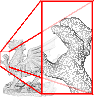
Example of triangle meshes showed in
wireframe.
It is an alternative to Monte Carlo methods when
scattering1 can be ignored or speed is required.
What do people do with gVXR?
Used in a wide range of applications, including:
- real-time medical simulators,
- proposing new imaging methods,
- prototype algorithms,
- studying noise removal techniques,
- teaching particle physics and x-ray imaging (250 students /
year),
- predicting image quality and artifacts,
- optimise scans, and
- a lot of ML/AI nowadays
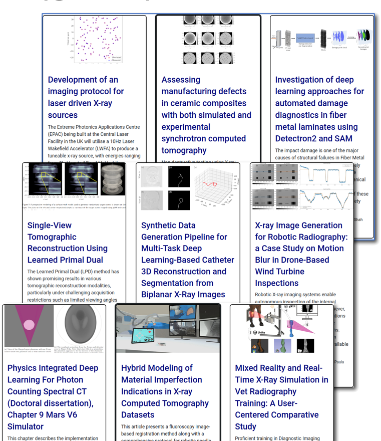
Example of applications.
How to cite?
Vidal, F.P.; Afshari, S.; Ahmed, S.; Albiol, A.; Albiol, F.; Béchet,
É.; Bellot, A.C.; Bosse, S.; Burkhard, S.; Chahid, Y.; et al. X-ray
simulations with gVXR in education, digital twining, experiment
planning, and data analysis. Nucl. Instrum. Methods Phys. Res. Sect. B
2025, 568, 165804. doi: 10.1016/j.nimb.2025.165804
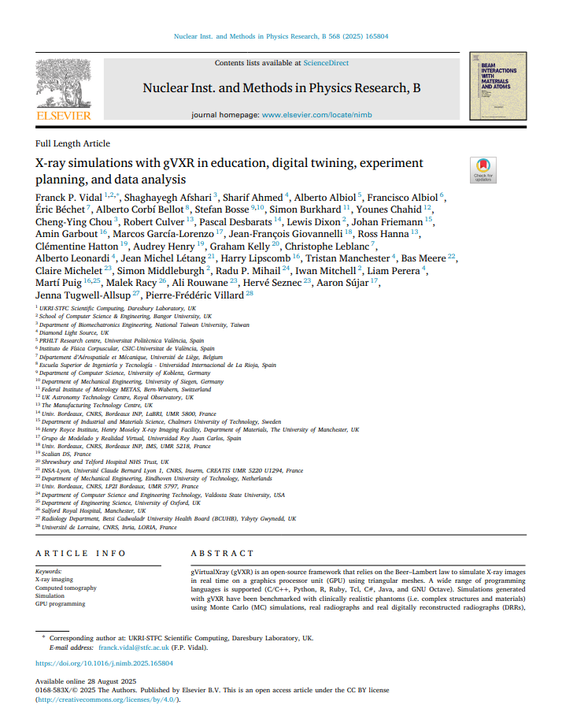
Implementation
- R&D started in the early 2000s, VXI1 by Nicolas Freud
(INSA-Lyon), and
- Its port on GPU when they became programmable (Bangor University,
2007);
- Not a ray tracer, but a rasterizer!
- Reimplementation from scratch as open source project on
- Registered on 2013-12-01;
- 4544 commits on 2026-09-09 (v2.1.0). (average of 1 commit a day in
12.5 years)
- Implemented in
using
- 173 C++ source files, 21036 lines of comments, 89950 lines of
code
- 123 C++ header files, 17482 lines of comments, 61203 lines of
code
- 69 CMake files, 1686 lines of comments, 5273 lines of code
- 81 GLSL files, 4249 lines of comments, 2965 lines of code
- 599 source code files, 49881 lines of comments, 199341 lines of
code
- Wrapper for ,
 , ,
, ,  ,
,  ,
,  , and .
, and .
Easy installation for
pip install gvxr
Jupyter Notebook 1: Test installation
- test_installation.ipynb
- Run the quick test script provided with gVirtualXray’s Python
package to make sure the installation is working well on your
system.

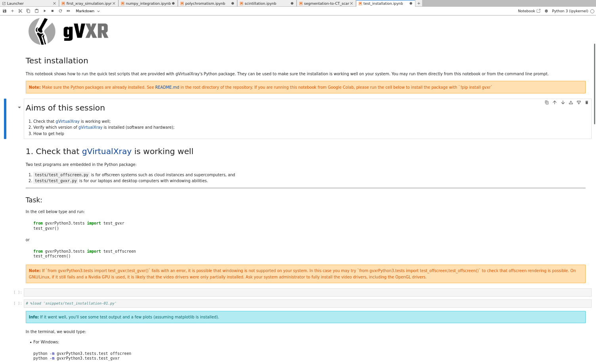
2. What can we scan?
- Surface mesh from files (all common formats are supported, inc.
STL)
STL file from 3D laser scanning
2. What can we scan?
- Surface mesh from files (all common formats are supported, inc.
STL)
- Multi-part models using multiple different materials
Lungman anthropomorphic chest phantom (Kyoto Kagaku, Tokyo,
Japan)

Paediatric phantom from the ERROR project.
2. What can we scan?
- Surface mesh from files (all common formats are supported, inc.
STL)
- Multi-part models using multiple different materials
- Volume meshes (INP files from Abaqus, EXPERIMENTAL)
Tooth model
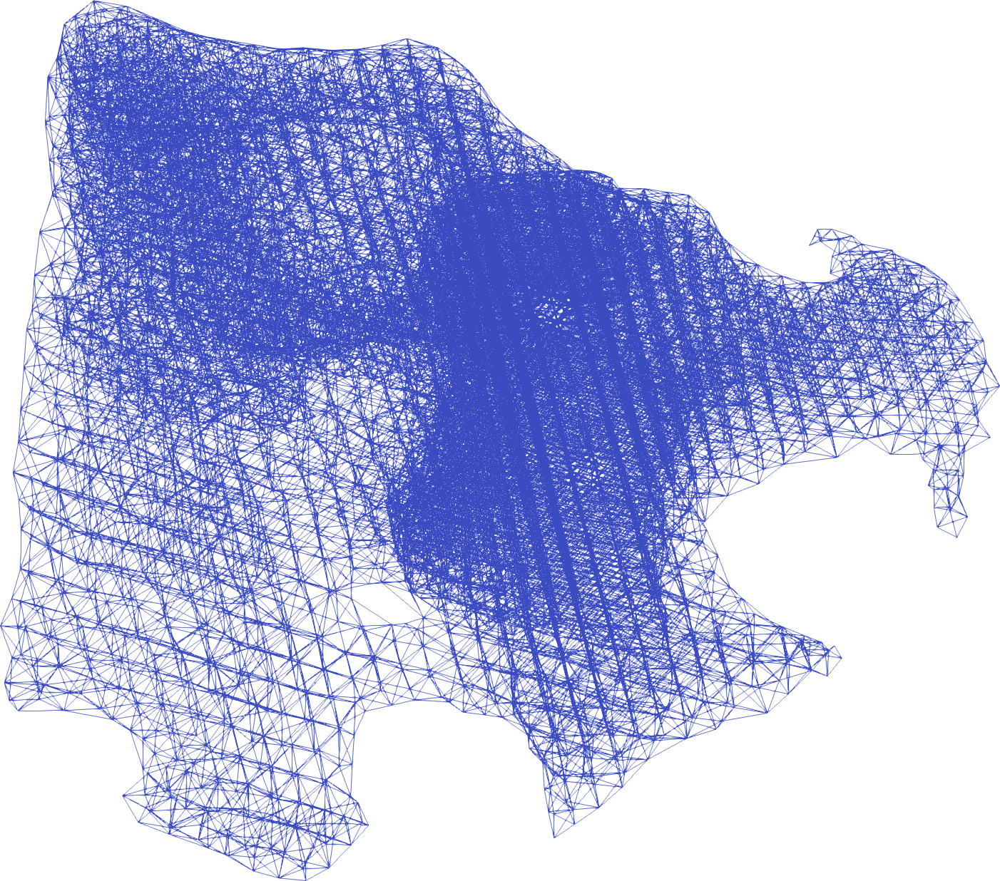
Volumetric mesh made of tetrahedrons.
2. What can we scan?
- Surface mesh from files (all common formats are supported, inc.
STL)
- Multi-part models using multiple different materials
- Volume meshes (INP files from Abaqus, EXPERIMENTAL)
- Implicit modelling (organic-looking \(n\)-dimensional isosurfaces)
| Far from each other |
Getting closer |
Close from each other |
Positive + negative density fields |
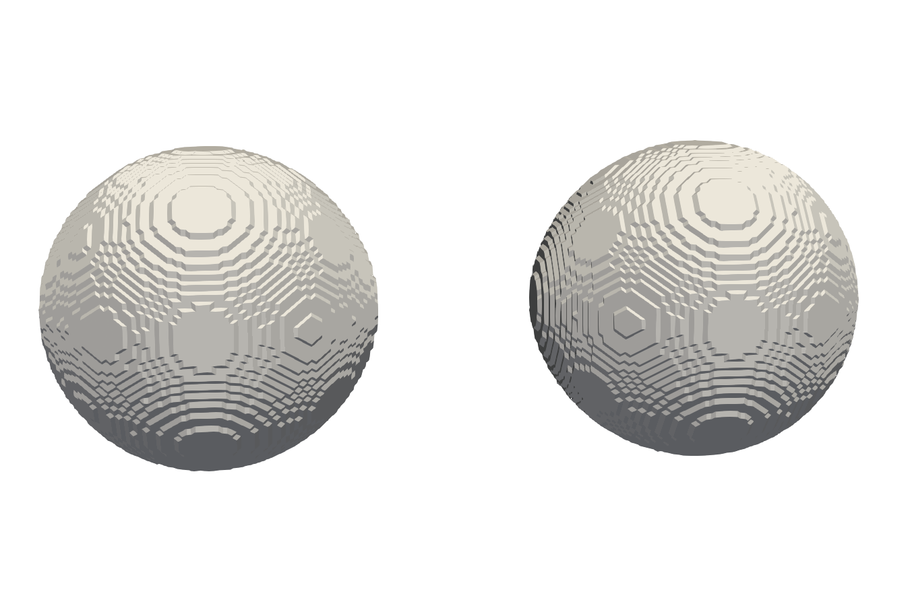 |
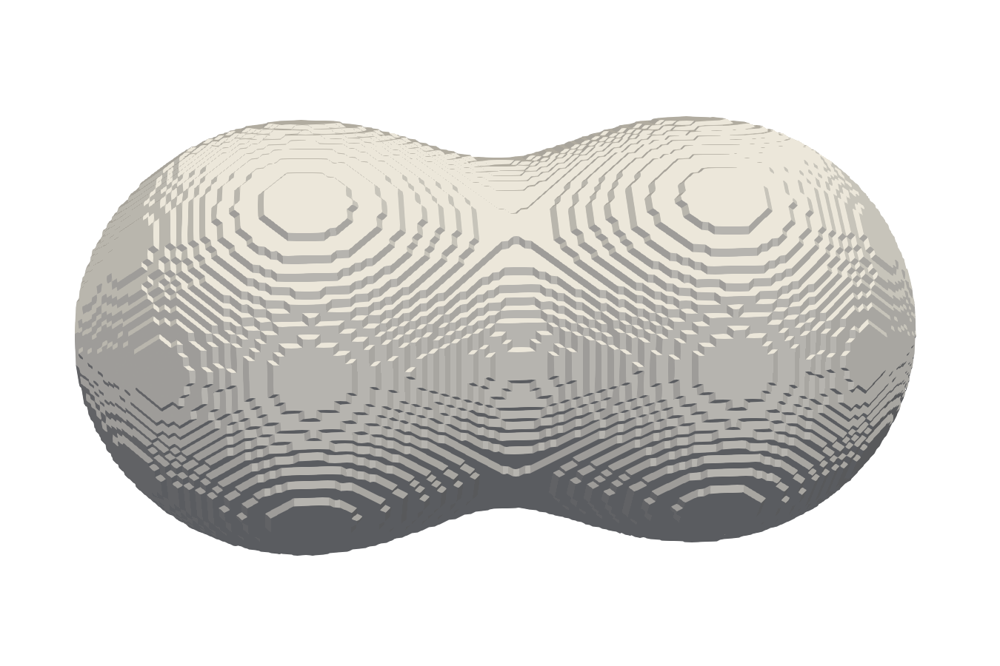 |
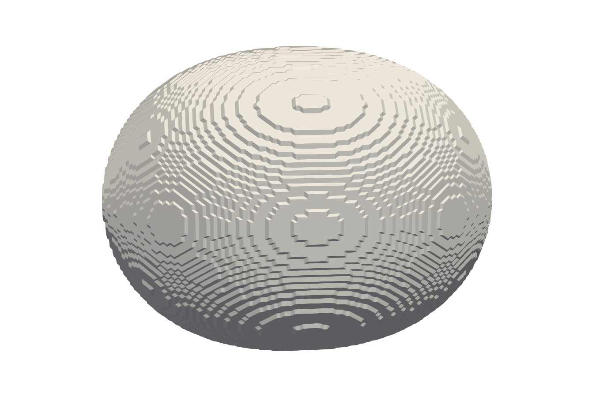 |
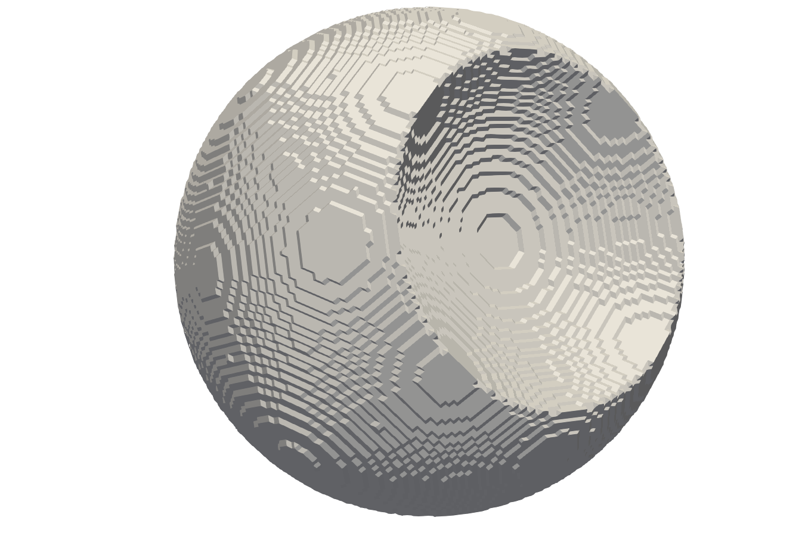 |
2. What can we scan?
- Surface mesh from files (all common formats are supported, inc.
STL)
- Multi-part models using multiple different materials
- Volume meshes (INP files from Abaqus, EXPERIMENTAL)
- Implicit modelling (organic-looking \(n\)-dimensional isosurfaces)
- Customisable built-in phantoms
| Welsh dragon |
Step wedge |
Foam |
Geometric shapes |
Lungman |
|
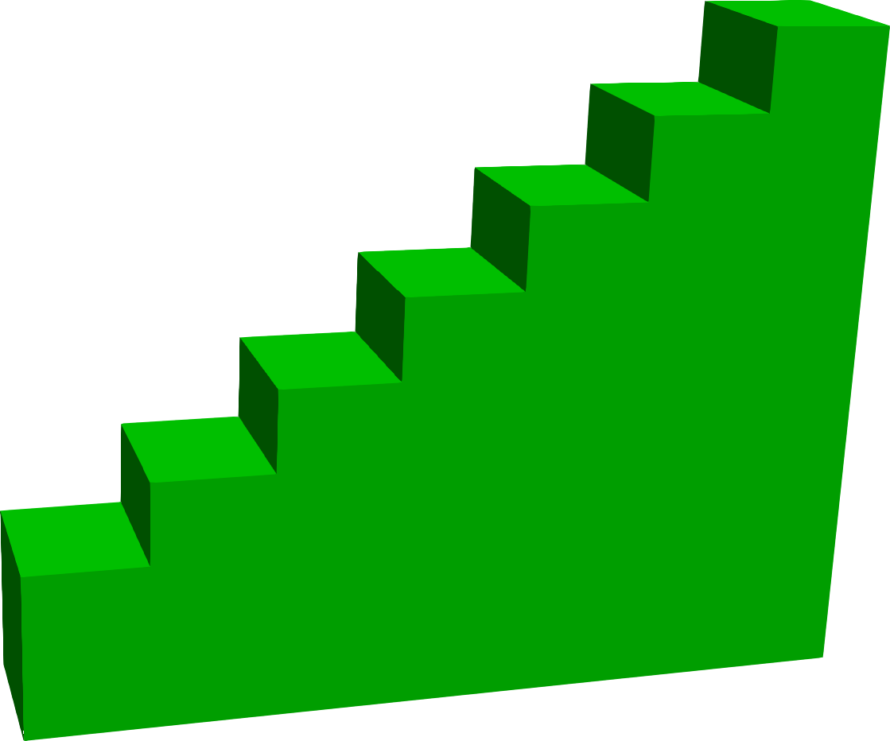 |
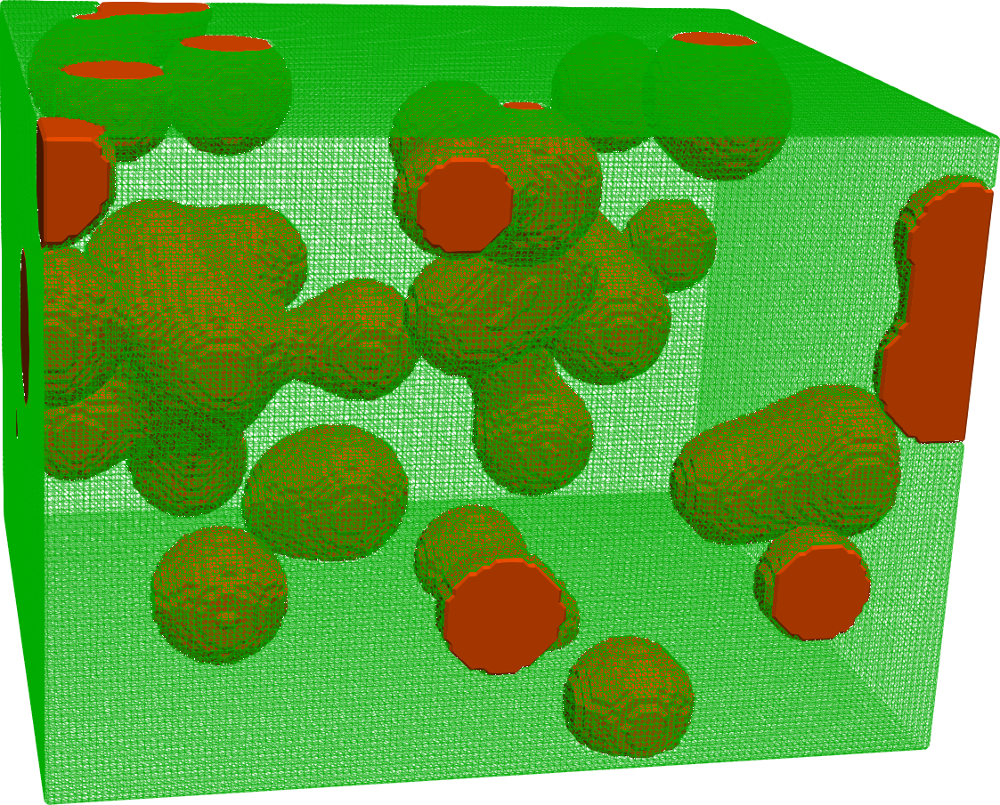 |
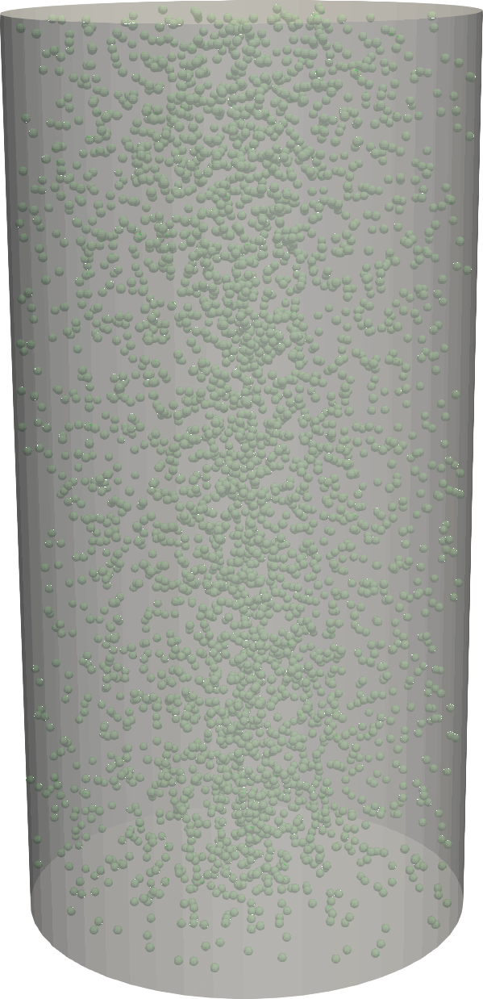 |
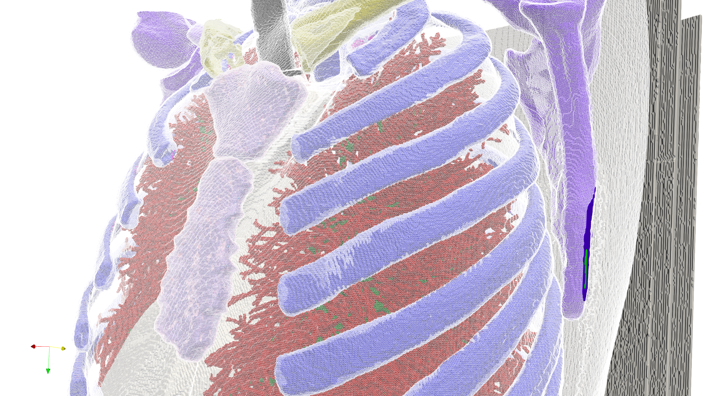 |
|
Fully customisable |
Fully customisable |
Cuboids, spheres, cylinders, |
To appear |
|
|
|
inc. boolean operations |
|
3. Beer-Lambert law (monochromatic)
\[
I_{mono}(x,y) =
E \times \mathbf{D}(E) \; \exp\left({-\sum_i \mu_i
(E) \; \mathbf{d}_{i}(x,y)}\right)
\]
- \(E\) is the Energy \(E\) emitted by the source
- \(\mathbf{D}(E)\) is the number of
photons of Energy \(E\) emitted by the
source
- \(\mu_i(E)\) is the linear
attenuation coefficient at Energy \(E\)
of the \(i\)-th material;
- \(\mathbf{d}_i(x, y)\) is the path
length of the ray from the X-ray source to pixel \((x,y)\) crossing the \(i\)-th material.
Jupyter Notebook 2: First X-ray simulation
- first_xray_simulation.ipynb
- Explore the step-by-step notebook to create our first X-ray
radiograph.
- A mono-material object is imaged with a monochromatic source and an
ideal detector.
- We show how to visualise the X-ray radiograph and take a screenshot
of the 3D visualisation of the simulation environment.
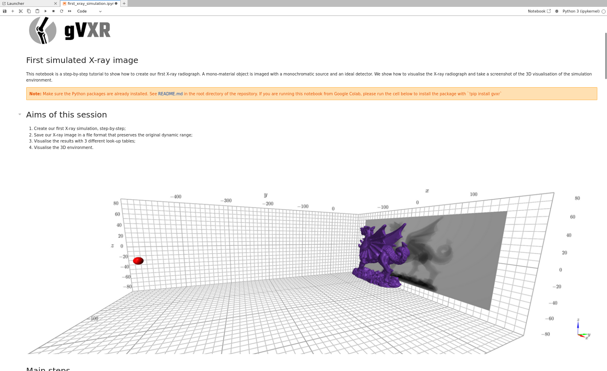
Jupyter Notebook 3: Numpy integration
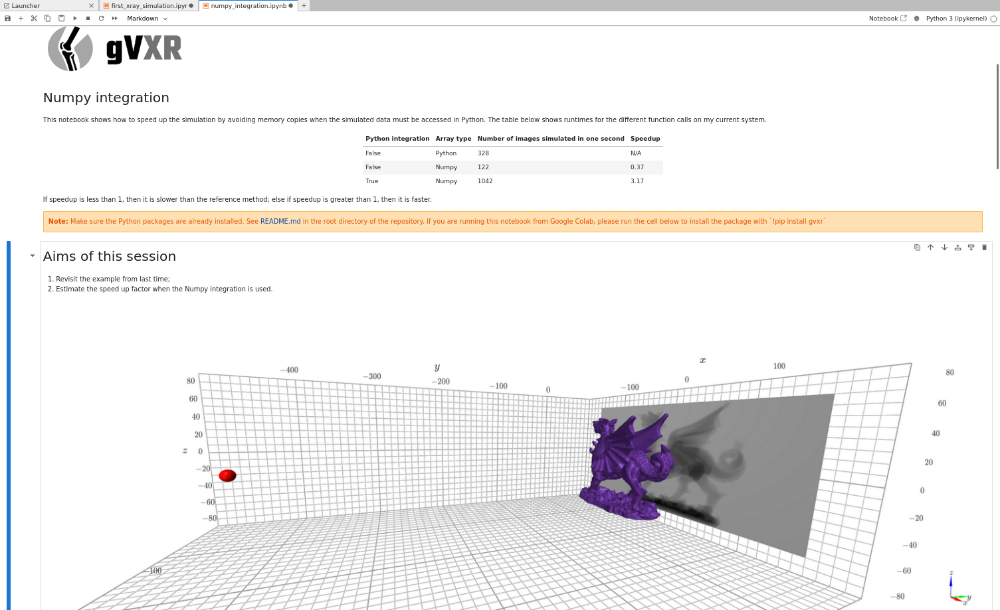
4. Built-in functionalities
- Flexible material composition;
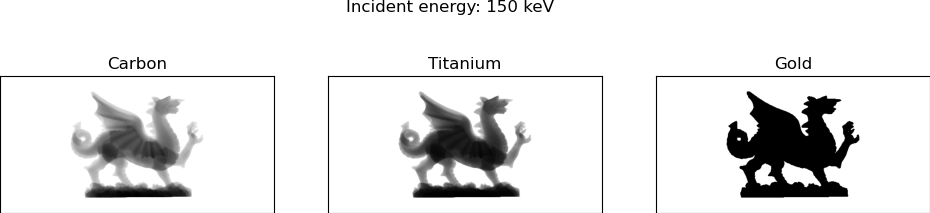
Chemical elements
4. Built-in functionalities
- Flexible material composition;
- Monochromatic & polychromatic
spectra:
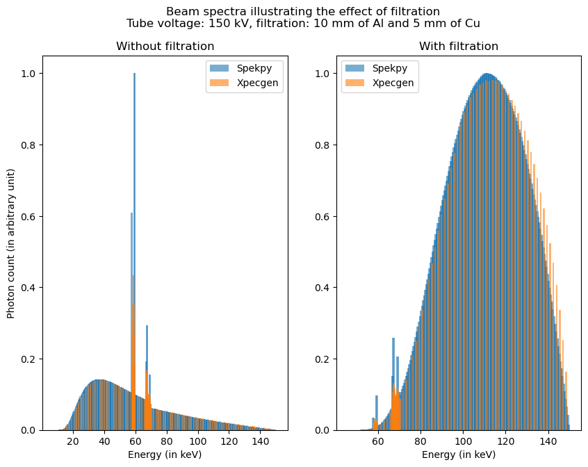
Spectrum comparision
4.2) Beer-Lambert law (polychromatic)
\[
I_{poly}(x,y) =
\sum_j E_j \times \mathbf{D}(E_j) \; \exp\left({-\sum_i \mu_i
(E_j) \; \mathbf{d}_{i}(x,y)}\right)
\]
- Polychromatism (\(\sum_j\)): Images are integrated
over \(J\) energy bins.
4. Built-in functionalities
- Flexible material composition;
- Monochromatic & polychromatic
spectra:
- including kV and beam filtration;
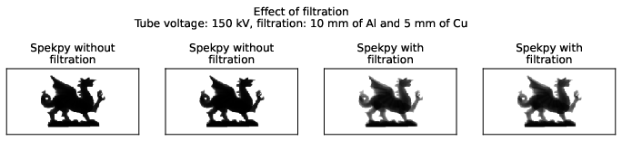
Image comparision (with/without
filtration)
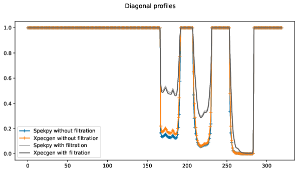
Profile comparision (with/without
filtration)
Jupyter Notebook 4: Polychromtic X-ray tube spectra
- polychromatism.ipynb
- In this notebook we explore how to specify polychromtic X-ray tube
spectra, without and with filtration.
- We also shows how to plot the spectrum.
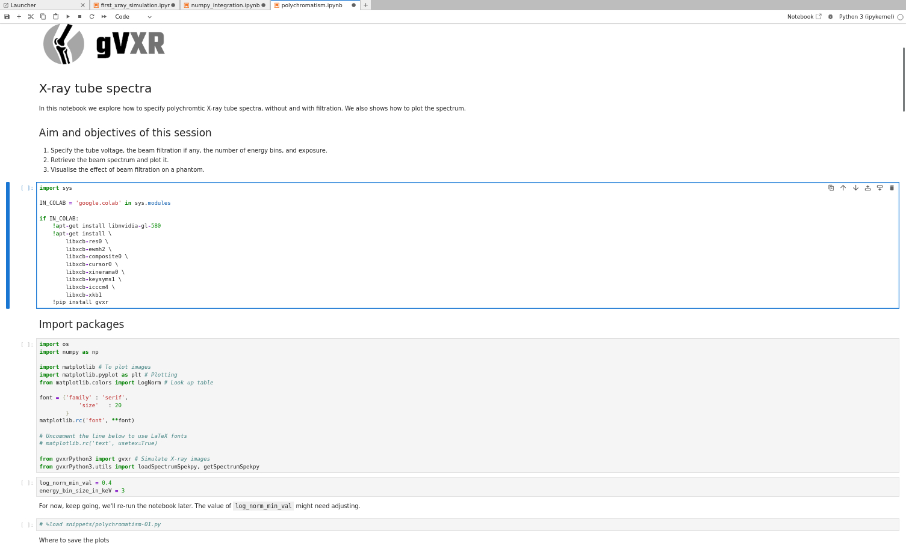
4. Built-in functionalities
- Flexible material composition;
- Monochromatic & polychromatic
spectra:
- including kV and beam filtration;
- Parallel beams, point sources,
& focal spots1;
| Focal spot type |
Size |
| Point |
0.0 mm |
| Cube |
0.25 × 0.25 × 0.25 mm |
| Square |
0.25 × 0.25 mm |
| Rectangle |
0.25 × 0.5 mm |
| Rectangle rotated by 25° |
0.25 × 0.5 mm |
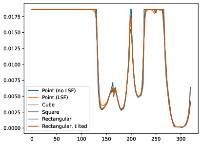
Focal spot type comparision
4.3) Beer-Lambert law (polychromatic + focal spot)
\[
I_{FS}(x,y) =
\sum_k \sum_j E_j \times \mathbf{D}(E_j) \; \exp\left({-\sum_i \mu_i
(E_j) \; \mathbf{d}_{i,k}(x,y)}\right)
\]
- Focal spot \(\left(\sum_k\right)\): Images are
integrated over \(K\) point
sources.
4. Built-in functionalities
- Flexible material composition;
- Monochromatic & polychromatic
spectra:
- including kV and beam filtration;
- Parallel beams, point sources,
& focal spots1;
- Scintillation;
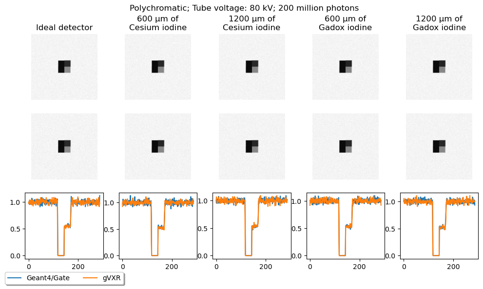
Scintillator comparison (gVXR vs. Geant4)
4.4) Beer-Lambert law (polychromatic + focal spot +
scintillation)
\[
I(x,y) =
\sum_k \sum_j \mathrm{R}(E_j) \times \mathbf{D}(E_j) \;
\exp\left({-\sum_i \mu_i
(E_j) \; \mathbf{d}_{i,k}(x,y)}\right)
\]
- Scintillator \(\left(\mathbf{R}(E_j)\right)\):
energy response of the detector, a lookup table.
Jupyter Notebook 5: Scintillation
- scintillation.ipynb
- In this notebook we explore how to create a detector with a
scintillator.
- We also shows how to plot the corresponding energy response.
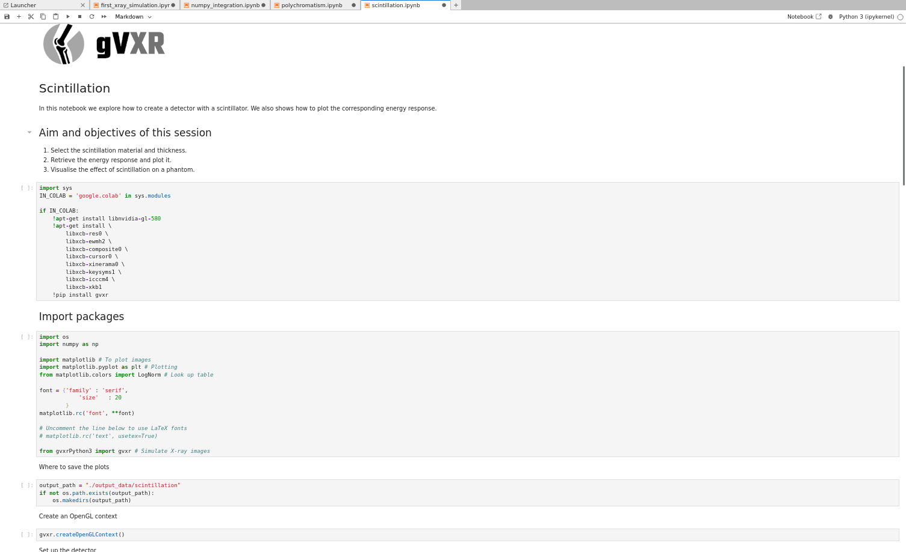
4. Built-in functionalities
- Flexible material composition;
- Monochromatic & polychromatic
spectra:
- including kV and beam filtration;
- Parallel beams, point sources,
& focal spots1;
- Scintillation;
- Impulse response of detectors;
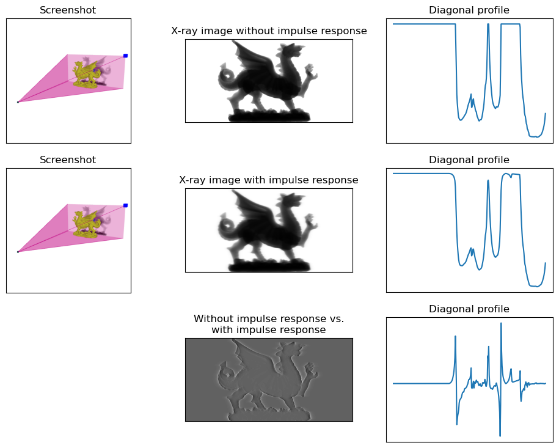
Image comparision (with/without blur)
4.5) Beer-Lambert law (polychromatic + focal spot + scintillation +
PSF)
\[
I_{PSF}(x,y) = PSF * \sum_k \sum_j \mathbf{R}(E_j) \times
\mathbf{D}(E_j) \; \exp\left({-\sum_i \mu_i
(E_j) \; \mathbf{d}_{i,k}(x,y)}\right)
\]
- Detector blur \(\left(PSF\right)\): 2D impulse
response of the detector, a low-pass convolution filter;
- \(*\): spatial convolution
operator.
4. Built-in functionalities
- Flexible material composition;
- Monochromatic & polychromatic
spectra:
- including kV and beam filtration;
- Parallel beams, point sources,
& focal spots1;
- Scintillation;
- Impulse response of detectors;
- Noise (electronic & photonic).
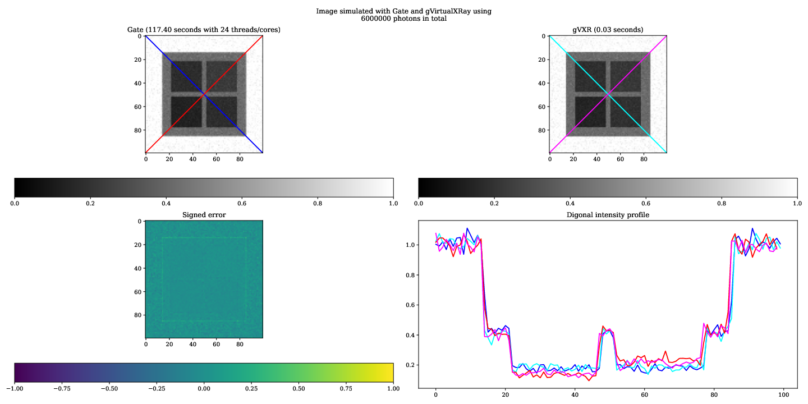
Poisson noise comparison (gVXR vs. Geant4)
4.6) Beer-Lambert law (polychromatic + focal spot + scintillation +
PSF + electronic noise & photonic noise)
\[
I_{noisy}(x,y) = \mathrm{Gauss}(\theta, \sigma) + gain \times
\left(PSF * \sum_k \sum_j \mathbf{R}(E_j) \times
\mathrm{Poisson}\left(\mathbf{D}(E_j) \; \exp\left({-\sum_i \mu_i
(E_j) \; \mathbf{d}_{i,k}(x,y)}\right)\right)\right)
\]
- Electronic noise \(\left(\mathrm{Gauss}(\theta,
\sigma)\right)\): additive Gaussian noise of average
\(\theta\) and standard deviation \(\sigma\) corresponding to the dark field
image
- Detector gain \(\left(gain\right)\): a
multiplicative factor
- Photonic noise \(\left(\mathrm{Poisson}\right)\):
Poisson noise that depends on the number of photons.
4.6) Final approximated model
- Models of Poisson noise: computationally slow;
- Complexity for previous slide: \(\mathcal{O}(n^3)\):
- one call of \(\mathrm{Poisson}()\)
- for every pixel
- for every energy bin
- for every focal spot source point
- Approximation: \(\mathcal{O}(n)\):
one call for every pixel only.
\[
e2p = \frac{\sum_j \mathbf{D}(E_j)}{\sum_j \mathbf{R}(E_j) \,
\mathbf{D}(E_j)} = \frac{1}{p2e}
\]
- Scaling factor (\(e2p\)): convert an integrated
energy (\(I\)) in into an approximated
number of photons;
- Scaling factor (\(p2e\)): convert an approximated
number of photons in an integrated energy.
\[
I_{final}(x,y) = \mathrm{Gauss}(\theta, \sigma) + gain \times
\left(PSF * \left(p2e \times \mathrm{Poisson}\left(I(x,y)\times
e2p\right)\right)\right)
\]
4. Built-in functionalities
- Flexible material composition;
- Monochromatic & polychromatic
spectra:
- including kV and beam filtration;
- Parallel beams, point sources,
& focal spots1;
- Scintillation;
- Impulse response of detectors;
- Noise (electronic & photonic).
- Interactive 3D visualization
Jupyter Notebook 6: 3D visualisation
- visualisation.ipynb
- Get familiar with the three different 3D visualisation methods
provided with gVXR, including:
- K3D to interactively visualise the 3D scene in a Jupyter
widget,
- a customisable static 3D visualisation, and
- an interactive 3D visualisation window.
- In this notebook you will also create a multi-material sample.
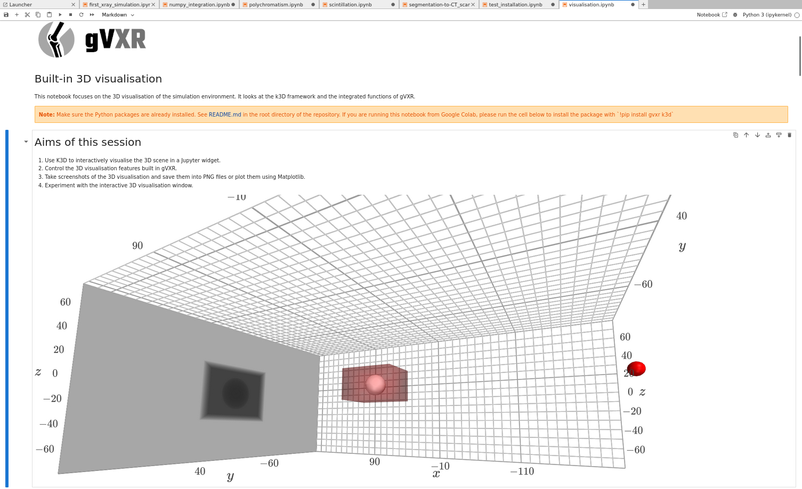
5. Is gVXR validated? 1
- Against state-of-the art Monte Carlo simulation,
namely Geant4/Gate
10 days with GATE vs. 1 second with gVirtualXray for 128 ×
128 pixels
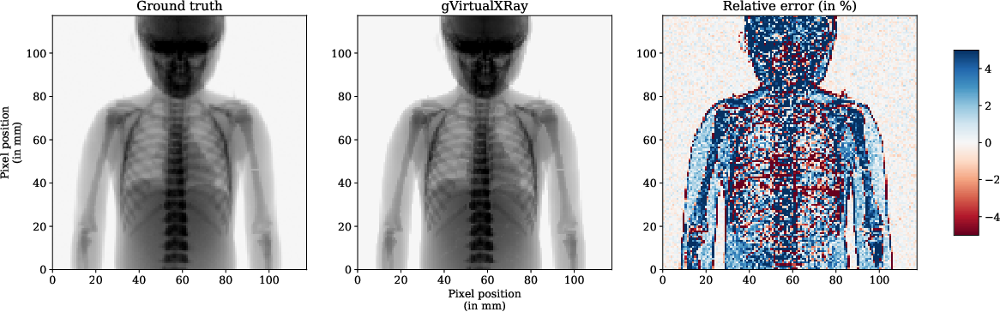
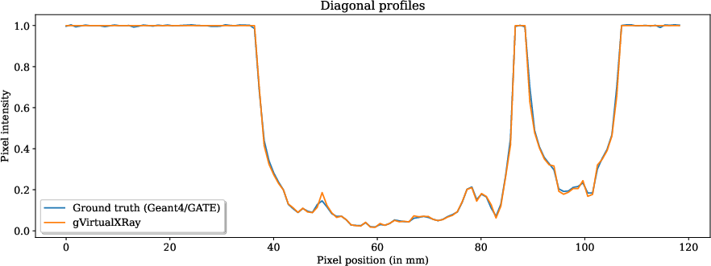
MAPE: 3.12%, ZNCC: 99.96%, SSIM: 0.99
5. Is gVXR validated? 1
- Against state-of-the art Monte Carlo simulation,
namely Geant4/Gate
- Against DRRs computed from experimental data
acquired with a clinically utilized device
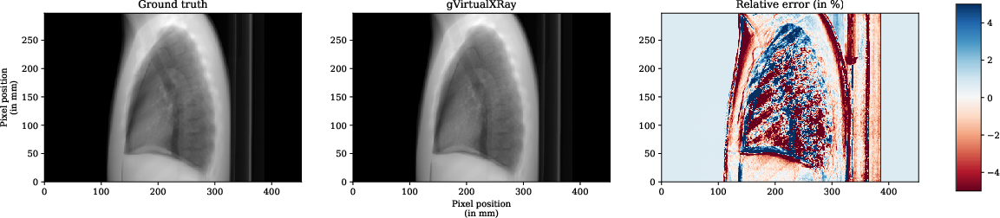
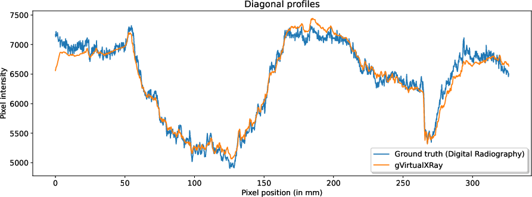
MAPE: 1.76%, ZNCC: 99.66%, SSIM: 0.98
5. Is gVXR validated? 1
- Against state-of-the art Monte Carlo simulation,
namely Geant4/Gate
- Against DRRs computed from experimental data
acquired with a clinically utilized device
- Against digital radiographs acquired with a
clinically utilized device
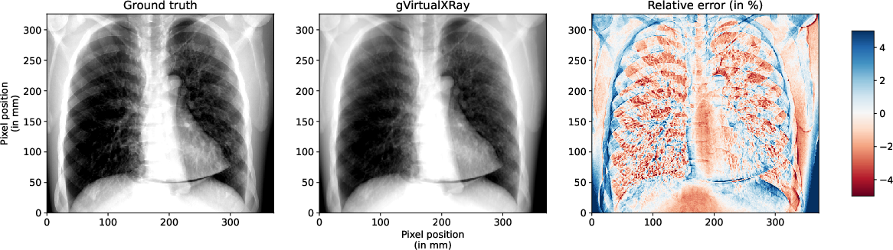
MAPE: 1.56%, ZNCC: 98.91%, SSIM: 0.94
5. Is gVXR validated? 1
- Against state-of-the art Monte Carlo simulation,
namely Geant4/Gate
- Against DRRs computed from experimental data
acquired with a clinically utilized device
- Against digital radiographs acquired with a
clinically utilized device
- Against CT slices from experimental data acquired
with a clinically utilized device
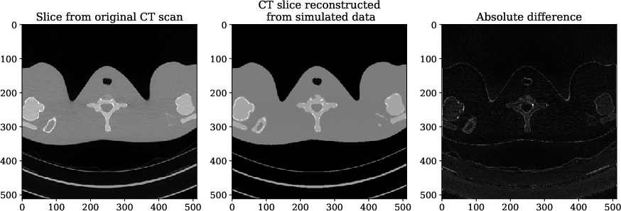
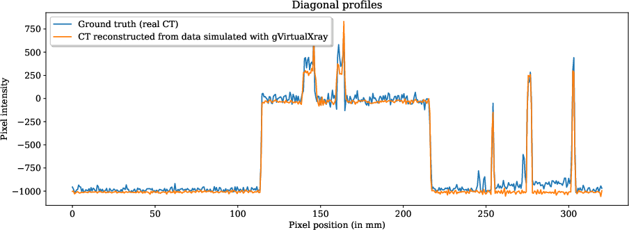
MAPE: 4.46%, ZNCC: 99.05%, SSIM: 0.82
Is gVXR fast?
It was initially used in realtime medical VR for training purposes.
So speed and accuracy are both requirements and tradeoffs must be
found!
- Spectrum: polychromatic with 50 energy bins
- Resolution: 100 × 100 pixels
- Flat field images: 10
- Number of threads for the Monte Carlo simulation: 24
- CPU: AMD Ryzen 5900X
- GPU: NVIDIA GeForce RTX 4060 Ti
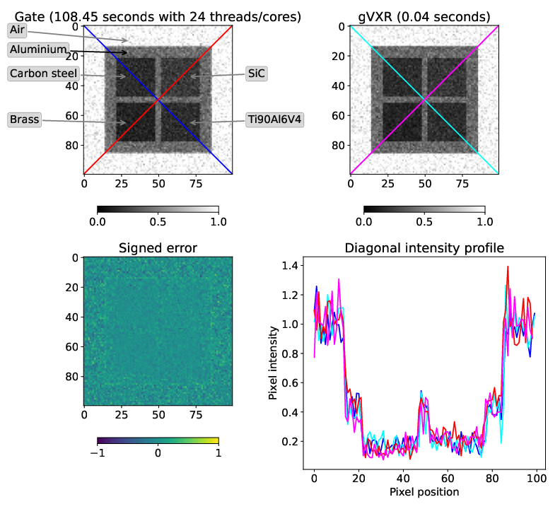
Comparison: Geant4 vs gVXR
::::::
Runtimes
| Photon count |
Execution time |
Execution time |
Speed-up factor |
|
with Gate |
with gVXR |
|
|
[in hh:mm:ss] |
[in ms] |
|
| 100,000 × 11 00 |
:01:47 |
32 |
3,378 |
| 275,000 × 11 00 |
:01:47 |
32 |
3,307 |
| 775,000 × 11 00 |
:01:48 |
35 |
3,090 |
| 2,150,000 × 11 00 |
:01:51 |
34 |
3,273 |
| 6,000,000 × 11 00 |
:01:57 |
31 |
3,812 |
| 16,000,000 × 11 00 |
:02:22 |
36 |
3,958 |
| 46,000,000 × 11 00 |
:05:24 |
40 |
8,059 |
| 130,000,000 × 11 00 |
:13:24 |
36 2 |
2,433 |
| 360,000,000 × 11 00 |
:36:34 |
36 6 |
0,783 |
| 1,000,000,000 × 11 01 |
:41:07 |
31 1 |
94,208 |
6. CT simulation
void computeCTAcquisition(const std::string & aProjectionOutputPath,
const std::string & aScreenshotOutputPath,
unsigned int aNumberOfProjections,
float aFirstAngle,
bool anIncludeLastAngleFlag,
float aLastAngle,
unsigned int aNumberOfWhiteImagesInFlatField,
float aPositionOfCentreOfRotationX,
float aPositionOfCentreOfRotationY,
float aPositionOfCentreOfRotationZ,
const std::string & aUnitOfLength,
float aAxisOfRotationX,
float aAxisOfRotationY,
float aAxisOfRotationZ,
bool anIntegrateEnergyFlag = true,
unsigned int aVerboseLevel = 0
)
Jupyter Notebook 7: Segmentation to simulation
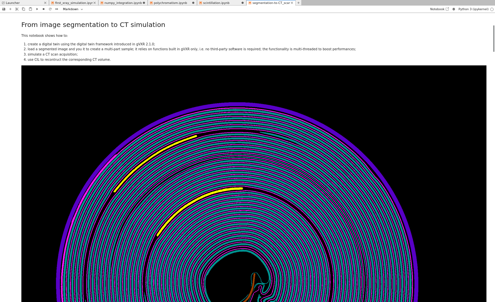
Python script: Simulation to ML
- simulated_data_generation.py
- This script is very similar to the previous notebook. It makes use
of the “XT H 225” twin.
- It will, however, run loops over:
- 6 samples
- SOD: 150 mm +/- 20%
- Current: 160 uA +/- 30%
- Exposures: [0.5, 1.0, 1.42, 2.0] seconds, and
- Voltages in the range [180, 225].
- In total, 3600 CT slices and corresponding labels will be
generated.
7. Other ways to use gVXR
- See
- Write the code to describe the previous parameters in pure , , , , , ,
, and .
- Or use a more human friendly file.
- To simplify the code.
JSON file (visualisation window)
{
"Window size": [640, 480],
JSON file (X-ray source)
"Source": {
"Position": [0.0, -1500.0, 0.0, "mm"],
"Shape": "POINT",
"Beam": {
"Peak kilo voltage": 160.0,
"Tube angle": 12.0,
"mAs": 0.5,
"filter": [
["Cu", 1.0, "mm"]
]
}
},
JSON file (X-ray detector)
"Detector": {
"Position": [0.0, 400.0, 0.0, "mm"],
"UpVector": [0, 0, -1],
"RightVector": [-1.0, 0.0, 0.0],
"NumberOfPixels": [512, 512],
"Size": [256.0, 256.0, "mm"],
"LSF": [0.0002, 0.0060, 0.0606, 0.2417,
0.3829, 0.2417, 0.0606, 0.0060, 0.0002],
"Scintillator": {
"Material": "CsI",
"Thickness": 500.0,
"Unit": "um"
}
},
JSON file (Sample)
"Samples": [
{
"Label": "Dragon",
"Path": "welsh-dragon-small.stl",
"Unit": "mm",
"Material": ["Mixture", "Al6Ti90V4"],
"Density": 4.43,
"Type": "inner"
}
],
JSON file (CT scan acquisition)
"Scan": {
"OutFolder": "projections",
"GifPath": "screenshots",
"NumberOfProjections": 200,
"StartAngle": 0,
"FinalAngle": 360,
"IncludeLastAngle": true,
"Flat-Field Correction": true,
"NumberOfWhiteImages": 60,
"CentreOfRotation": [0, 0, 0, "mm"],
"RotationAxis": [0, 0, -1]
}
}
file (CT simulation)
from gvxrPython3 import json2gvxr # Simulate X-ray images
json2gvxr.initGVXR("filename.json", renderer="OPENGL")
json2gvxr.initDetector()
json2gvxr.initSourceGeometry()
json2gvxr.initSpectrum()
json2gvxr.initSamples(verbose=0)
json2gvxr.initScan()
json2gvxr.doCTScan()
file (CT reconstruction)
from gvxrPython3.JSON2gVXRDataReader import *
from cil.processors import TransmissionAbsorptionConverter
from cil.framework import AcquisitionData
from cil.recon import FDK
from cil.io import TIFFWriter
reader = JSON2gVXRDataReader(file_name="filename.json")
data_absorption = TransmissionAbsorptionConverter(
white_level=data_original.max())(data_original)
acquisition_data = AcquisitionData(data_absorption,
geometry=data_absorption.geometry)
acquisition_data.reorder(order="tigre")
ig = acquisition_data.geometry.get_ImageGeometry()
fdk = FDK(acquisition_data, ig)
recon = fdk.run()
TIFFWriter(data=recon, file_name="slices", "out")).write()
Modern Web-based GUI
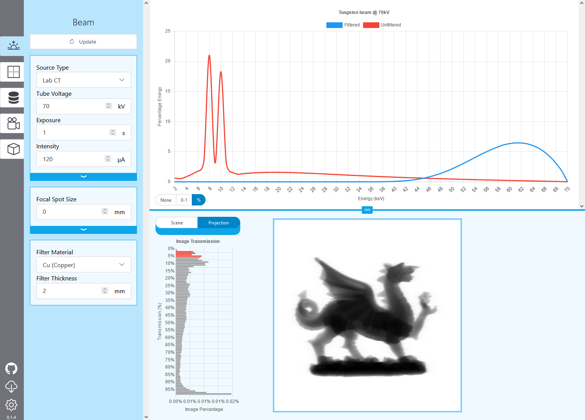
Screenshot of WebCT
:::::: :::::::
Thanks
- For your attentions;
- The Ada support team, in particular Adam, Isaac, Jeremy and Peter;
and
- Our sponsors